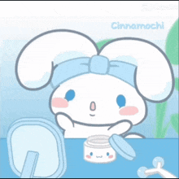
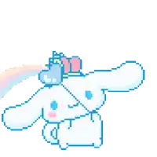
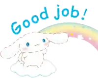
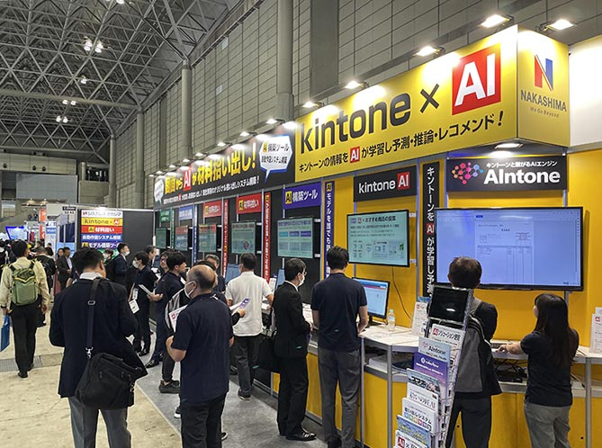
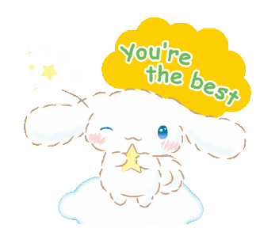

Salsabil Ouni
AI & ML Engineer · Full Stack · Protein Stuff
☁️ Tunisia, Sousse • open to all adventures!


☁️ About Me
Hi, I'm Salsabil ☁️
I'm an AI engineer who's spent time building in Japan and Tunisia, things like Protein engineering, ML in genetics and healthcare , TTS systems, rehab AI, and medical imaging models. Mostly because I genuinely think teaching machines to solve real problems is fascinating.
At the moment, I'm doing something slightly chaotic: pursuing two degrees at once , an Engineering Diploma in AI & Data Science and a Master's in Molecular Medicine AI. It's a lot, but the overlap between the two is where the most interesting problems live.
I speak 5 languages and i like interning abroad. Outside of coding I'm usually organizing events, eating at hackathons or sleeping in conferences.
And as you can tell I'm obsessed with Cinnamoroll ☁️! (You can listen to my favorite cinnamoroll songs by clicking on the music note , they're soo cute!!), You can also play my cinnamoroll stitch game here stitch with cinnamoroll !
Experience
- Designed and conducted a computational study of TP53 missense mutations to investigate how 3D structural environments influence protein variant impact, as part of a Molecular Medicine master's dissertation.
- Developed a reproducible Python pipeline integrating experimental ΔΔG data, FoldX stability analysis, FreeSASA solvent accessibility, structural patch analysis, and statistical modelling.
- Validated findings against two independent deep mutational scanning datasets and identified solvent burial as a major factor associated with variant impact.
- Applied statistical modelling and machine learning to assess variant classification performance using controlled feature sets and baseline comparisons.
- Integrated protein structure and sequence data from PDB, AlphaFold, and UniProt using Biopython and PyMOL to generate interpretable, quantitative results.
- Designed and trained an AI-driven Arabic Text-to-Speech synthesis system using VITS (Variational Inference with adversarial learning), achieving 97% intelligibility with natural-sounding prosody and intonation.
- Built a full production pipeline from data preprocessing to model training, handling Arabic phonetic complexity and diacritics to produce human-like speech output.
- Deployed the system as a Python–Svelte web interface containerized with Docker, enabling real-time synthesis with <1.5s latency and interactive audio playback.
- Built an end-to-end multimodal medical AI pipeline that reads thoracic X-rays and automatically generates structured diagnostic reports, combining CNN image analysis with Transformer and LLM-based report generation, achieving 96% validation performance.
- Handled the full ML lifecycle: dataset curation, augmentation, model architecture design, training, evaluation, and clinical report formatting, working on real medical imaging data from scratch.
- Deployed as an interactive Streamlit application with model evaluation dashboards, prediction visualization, and side-by-side report comparison for clinical review.
- Developed Genki Walk (graduation project): a sensor-free AI rehabilitation monitoring system for post-TKA patients, built entirely from scratch in a Japanese clinical environment with real data from 36+ patients.
- Engineered a video-based gait analysis pipeline using MediaPipe pose estimation to extract biomechanical parameters from raw footage without any wearable sensors, eliminating hardware cost barriers for clinics.
- Designed and benchmarked Transformer, RNN, and LSTM architectures for gait classification, achieving 91% accuracy, validated against clinical assessments from a Japanese rehabilitation center.
- Delivered a full-stack AWS-hosted platform (Django + Vue.js) enabling clinicians to remotely track patient recovery progress over time with visual analytics dashboards.
- Engineered Aintone, an AI sales forecasting platform for Kintone (a major Japanese enterprise no-code platform) using PyTorch time-series predictive models achieving 92% accuracy, with a Django backend and Vue.js frontend.
- Acted as technical-business liaison between the engineering team and Japanese business stakeholders: gathered requirements, translated business goals into model specifications, and managed delivery expectations across language and cultural barriers.
- Presented the product at Tokyo Big Sight 2023, one of Japan's largest technology exhibitions, to 400+ attendees, pitching the platform to enterprise clients and receiving industry recognition.
- Built an NLP-powered career assistant chatbot that automatically generates fully personalized CVs and cover letters, using TensorFlow for model training, spaCy for semantic text processing, and Django for the backend API.
- Designed custom text-understanding pipelines that analyze user profiles, extract relevant skills and experiences, and tailor the tone, structure, and content of each document to the specific job application context.
- Delivered a working end-to-end conversational interface that guides users through the document generation flow with no manual formatting required.
- Took full ownership of the frontend for Expert Santé, a medical awareness platform serving 1,000+ users, delivering a polished, responsive interface independently from scratch.
- Architected component structure, routing, and API integration in Angular, consuming REST endpoints to serve dynamic medical content and user-specific health information in real time.
- Gained hands-on experience translating medical UX requirements into clean, accessible UI code, laying the foundation for subsequent AI-focused internships.
Education
Skills
Projects
Research
Certifications
Languages
Academic Talks
Achievements

AIESEC Japan Waseda University Global Talent 2023
Selected as a Global Talent out of 22 countries worldwide through AIESEC Japan Waseda University, which led to my first internship in Tokyo. Pretty much changed the direction of everything after that.
Aintone at Tokyo Big Sight 2023
Our AI sales trend prediction system Aintone was showcased at Tokyo Big Sight, one of Japan's largest exhibition venues, attracting 400+ attendees.

AIESEC Japan Osaka University Global Talent 2025
Selected as a Global Talent out of candidates from 20 countries worldwide through AIESEC Japan Osaka University, leading to my second internship in Japan.

16× Hackathon Winner
Competed in and won 16 hackathons across AI, software engineering, and healthcare, consistently placing first against teams from top universities and tech companies across Tunisia and international events.
Graduated with Honors: Bachelor of Computer Science & Software Engineering, 2024
Ranked among the top graduates of the Higher Institute of Applied Science and Technology of Sousse. Graduation project Genki Walk: a machine learning-powered walking app developed during an internship at Systems Nakashima, Japan, using motion detection and ML models to analyze and encourage daily physical activity.
Volunteering
Community & Events
IEEE
let's talk ☁️
always happy to chat about work, ideas, or anything in between
stressed? play a comforting game!
stitch with cinnamoroll, no pressure, no timers ☁️
☁️ hey there!
what's your field?
i'll show you the most relevant version of my CV~